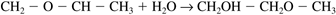
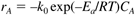
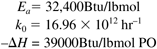
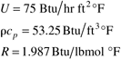
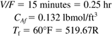

M8.3 Example Chemical Process—Propylene Glycol Production
Roughly 1.3 billion pounds of propylene glycol are produced per year. It has a wide variety of uses, including: anti-freeze applications, including aircraft deicing; a solvent for a number of drugs; moisturizers; and as artificial smoke or fog, for fire-fighting training or theatrical productions. Propylene glycol is produced by the hydrolysis of propylene oxide with sulfuric acid as a catalyst

Water is supplied in excess, so the reaction is first-order in propylene oxide concentration. The rate of reaction of propylene oxide (component A) is first-order

Parameter Values
This system has the following activation energy, frequency factor, and heat of reaction values

The other parameters are

Assume that the reactor is to be operated with the following residence time, feed concentration, and feed temperature

Also assume the reactor is designed as a vertical cylinder with a height/diameter ratio of 2:1, that complete heat transfer area coverage occurs when the reactor is 75% full, and that the reactor is operated at 85% of the design volume.
 |